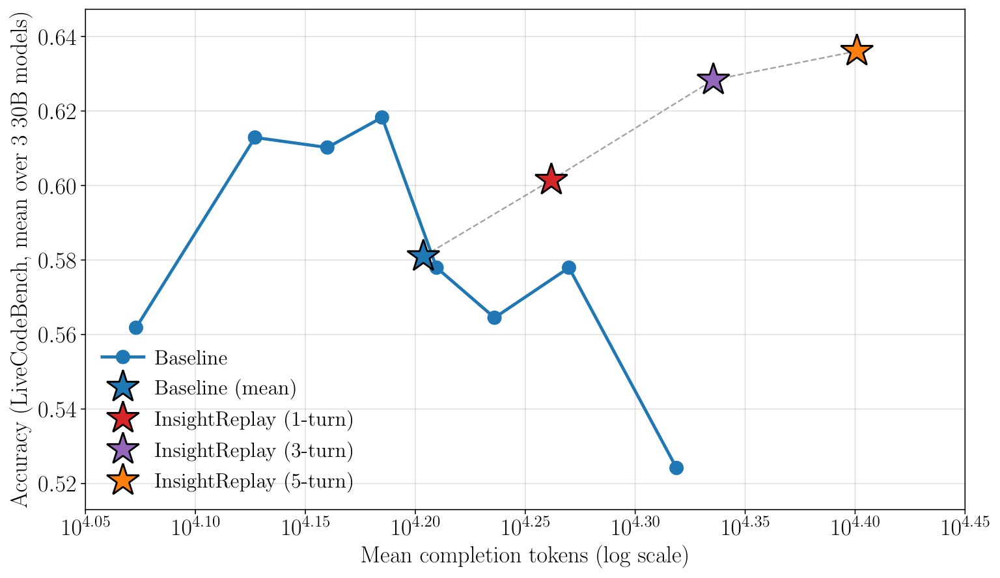
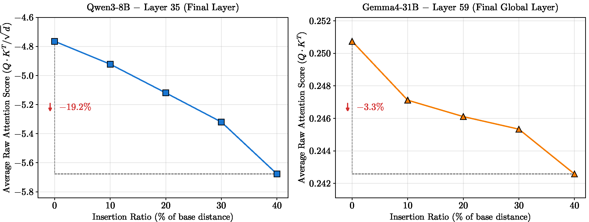
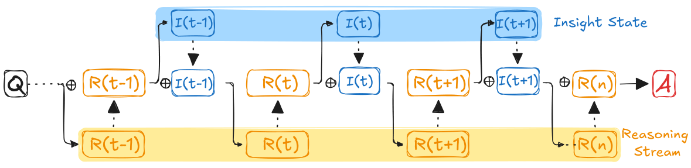
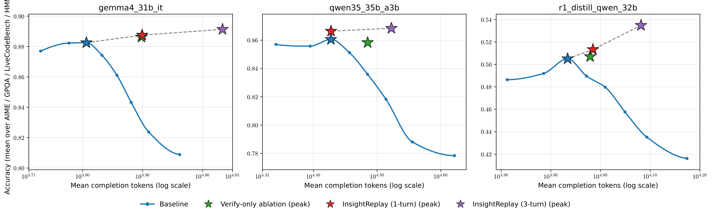
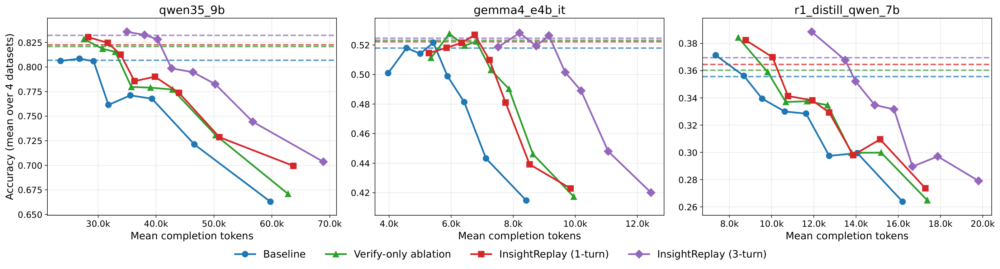
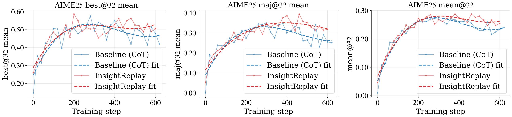

Recent work shows that longer chain-of-thought (CoT) is not monotonically better. On a fixed-difficulty problem, accuracy traces an inverted-U as CoT length grows — first improving, peaking, then declining as the chain becomes excessively long. We ask: what drives this decline, and can it be fixed?

Accuracy vs. mean tokens for Baseline (standard CoT) and InsightReplay (1, 3, 5 replay rounds), averaged over three 30B-tier models on the LiveCodeBench v5 subset. Baseline peaks at ~15K tokens then declines; InsightReplay turns the degradation regime into continued growth.
Two controlled experiments on 60 AIME problems with Qwen3-8B reveal two properties of critical insights — the small set of compressed sub-conclusions scattered through a long reasoning trace.
We extract 5–7 key insights from each full thinking trace, then feed seven
content variants inside the <think> tag and read the answer
probability P(ans).
Legend: ✓ = present · — = absent · ∅ = replaced with random tokens of the same length as the original CoT trace.
| Condition | Content inside <think> |
Tokens | P(ans) | ||
|---|---|---|---|---|---|
| CoT trace | Repeated Q | Insights | |||
| A Full trace | ✓ | — | — | 16,731 | 0.512 |
| B Q + insights | — | ✓ | ✓ | 378 | 0.273 |
| C Insights only | — | — | ✓ | 236 | 0.387 |
| D Full + Q + insights | ✓ | ✓ | ✓ | 17,109 | 0.557 |
| E Full + insights | ✓ | — | ✓ | 16,967 | 0.545 |
| F Random + Q + insights | ∅ | ✓ | ✓ | 17,109 | 0.131 |
| G Random + insights | ∅ | — | ✓ | 16,967 | 0.127 |
(i) Insights carry concentrated signal — condition C keeps 75.6% of P(ans) with only 1.4% of the tokens. (ii) Insights are additive on top of the trace — D / E beat A, so re-exposing the model to its own insights helps even when the trace is already in context.

We push insights further from the generation frontier by inserting semantically neutral filler tokens at ratio ρ ∈ {0, 0.1, 0.2, 0.3, 0.4} and measure the pre-softmax attention from the answer token. From ρ = 0 to ρ = 0.4, attention drops 19.2% on Qwen3-8B (paired bootstrap, p < 0.001) and 3.3% on Gemma-4-31B-it. The decay is monotonic and survives a very different RoPE configuration — suggesting it reflects a general property of trained attention, not any specific positional encoding.
InsightReplay treats reasoning as a stateful process. The model periodically extracts critical insights from its trace and replays them near the active generation frontier, so they stay inside the attention window where attention is strongest — cancelling the distance-decay from Finding 2.

Applying InsightReplay as a sampling-time decoder on already-trained models. Across all 24 settings — {8B, 30B} × {Qwen3.5, R1-Distill-Qwen, Gemma-4} × {AIME, HMMT, GPQA Diamond, LiveCodeBench v5} — 3-round InsightReplay beats standard CoT. Averaged gain +1.65 points; peak single-setting gain +9.2 on R1-Distill-32B / LCB v5.


Running InsightReplay as the rollout strategy during RL training (GRPO+DAPO on Qwen3-4B-Base, 128 GPUs × 16 nodes, DAPO-Math-15k). Compared to baseline GRPO on the same setup, the InsightReplay-rollout run lifts validation accuracy on AIME-2025 and sustains the gap over the full training trajectory.

@article{lei2026insightreplay,
author = {Lei, Bin and Ding, Caiwen and Yang, Jiachen and Li, Ang and Wang, Xin Eric},
title = {Stateful Reasoning via Insight Replay},
journal = {arXiv preprint arXiv:2605.14457},
year = {2026},
url = {https://arxiv.org/abs/2605.14457},
}